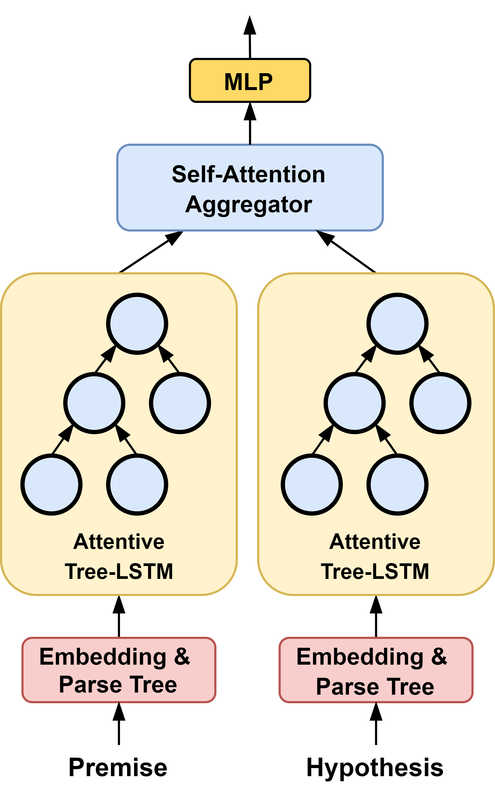

I am a senior undergraduate student studying computer science and mathematics at Rose-Hulman Institute of Technology. I plan to attend graduate school after graduation and pursue a Ph.D. degree in the field of natural language understanding and reasoning. My main focus is research, and I am advised by Michael Wollowski @ Rose-Hulman and Larry Moss @ Indiana University.
My research interests are natural language processing and understanding,
particularly in building models capable of human-level inference and understanding of language.
My research primarily focuses on natural logic & monotonicity,
neural language models, computational semantics, and natural language inference.
I'm currently working on probing implicit knowledge from language models for
building better semantic representations from language, and on developing a novel
learning framework that train models to learn human-level reasoning process
through meta reinforcement learning.
Feel free to say hi: chenz16@rose-hulman.edu
What's New
[Jun 2021] Paper out on arxiv:
NeuralLog: Natural Language Inference with Joint Neural and Logical Reasoning.
[Jun 2021] Serving as a reviewer for AAAI Magzine.
[Jun 2021] Invited talk to IU Polarity Annotation Group and AI2 Aristo Team, on NeuralLog.
[Jun 2021] NeuralLog paper accepted by *SEM2021.
[May 2021] Paper out on arxiv:
Monotonicity Marking from Universal Dependency Trees.
[Apr 2021] Monotonicity Marking from Universal Dependency Trees accepted by
IWCS2021.
[Jul 2020] Presented Attentive-tree-structures neural network @
NALOMA2020.
[May 2020] Attentive-tree-structures neural network paper accepted by
NALOMA2020.
Publications

|
Both Deep learning based language models and symbolic logical inferences approaches have their advantages and weaknesses on Natural Language Inference (NLI), but no method has combined them togather for joint reasoning. We propose NeuralLog, a novel framework that conducts inference through joint logical and neural reasonings by modeling the NLI task as a path searching problem. Experiments show that NeuralLog achieves state-of-art performance on SICK and MED datasets. |

|
Dependency parsing is a tool widely used in the field of Natural language processing. However, there is hardly any work that connects dependency parsing to monotonicity, an essential part of logic and linguistic semantics. We propose a system that automatically annotates monotonicity information based on Universal Dependency parse trees. Results show that our system outperforms NatLog and ccg2mono on a small evaluation dataset. |
 |
Many state-of-art neural models designed for monotonicity reasoning perform poorly on downward inference. To address this shortcoming, we developed an attentive tree-structured neural network. It consists of a tree-based long-short-term-memory network (Tree-LSTM) with soft attention. It is designed to model the syntactic parse tree information from the sentence pair of a reasoning task. A self-attentive aggregator is used for aligning the representations of the premise and the hypothesis. We present our model and evaluate it using the Monotonicity Entailment Dataset (MED). We show and attempt to explain that our model outperforms existing models on MED. |
Research
Currently, models for Natural Language Inference (NLI) are too one-dimensional. They are either deep-learning-based models or logic-based models. Deep-learning-based neural language models can achieve SOTA performance on multiple benchmarks and even reach the so-called "superhuman performance." They are good at handling inferences involving syntactic variation, commonsense reasoning, social reasoning, and background knowledge. On the other hand, symbolic-logic-based systems show good performance on small challenge datasets containing complex linguistic phenomena through logic or semantic formalism. However, both sides show some weaknesses. Neural models lack generalization ability, adopt fallible heuristics, exploit dataset artifacts, and fail to do well on complex linguistic inferences. Logic models show lower robustness and lack world and commonsense knowledge. My research focuses on combining these two types of models into joint reasoning: neural-symbolic inference. My principle is that neural networks and logic formalisms are both excellent inference tools, but they require guidance and controlling to assign them into appropriate problem domains. My work uses various neural and symbolic inference models, including neural language models, natural logic, and semantics. I also explore multiple controller methods such as Neural Architecture Search, Deep Reinforcement and Meta-Learning, and evolutionary strategies.
Open Source Projects